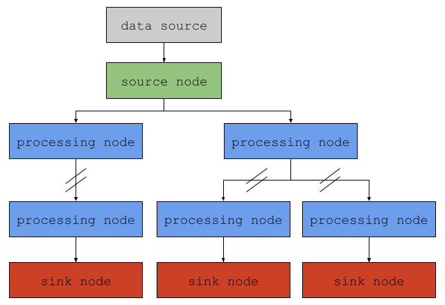

Introducing Juturna#
Juturna is a tool that lets you create and manage data processing pipelines
starting from json files. Juturna is meant as a fast prototyping tool for
consuming, manipulating and transforming input data throughout a number of
customisable nodes.
Main entities#
Let’s start by defining what is what in Juturna.
A pipeline can simply be defined as a collection of nodes. Each node acquires a piece of data from its parent and, after performing a single task, provide its output to its children. In this sense, a Juturna pipeline is nothing else but a rooted tree , a particular kind of DAG where there is a single root node with in-degree of 0 (this is not technically the case, but we’ll skip it for now), and every other node has an in-degree of 1.
A node is a pipeline component that should, ideally, do one and only one thing. Depending on the task they are programmed to perform, nodes can be:
source: they either consume external data (obtained from real-time streams, remote or local files, databases…) or generate data to push into the pipelline
processing: they either transform, annotate or tag input data, or generate completely new data based on their input
sink: they deliver the input data to a configured destination, either local or remote
To recap, the key points to keep in mind about a pipeline are:
a pipeline has a single source node, consuming data from an external source, either remote or local
each node in a pipeline, be it source, processing, or sink, can read its input data from a single node, but can produce its output data for multiple nodes
Creating a pipeline#
Pipelines can be created starting from a simple json file. An example is
provided below of what a basic configuration file for an empty pipeline looks
like this:
{
"version": "0.1.0",
"plugins": ["./plugins"],
"pipeline": {
"name": "my_awesome_pipeline",
"id": "1234567890",
"folder": "./running_pipelines",
"nodes": [ ],
"links": [ ]
}
}
The actual items concerning the pipeline are contained within the pipeline
object. Namely, they are:
name: a symbolic pipeline nameid: a unique pipeline identifierfolder: a path to the folder where the required pipeline tree will be created (used to store artifacts, temporary files, or any other pipeline product that needs persistency)nodes: a list of all the nodes in the pipelinelinks: a list of the links connecting the nodes in the pipeline
A couple of things to notice here:
We have to specify the library version we are currently using. This field is likely to be removed in the future, but as of now it is important to keep it to make sure the API version is correct and nothing breaks apart.
We assign both
nameandidfields in the pipeline configuration. Whilst there might be an overlap between them, theidfield is required by other tools that might wrap Juturna and manage multiple pipelines at once. With those tools, pipeline ids are likely to be assigned automatically in order to prevent overlaps.
Once this is ready, we can go on and instantiate the pipeline itself:
import juturna as jt
pipe = jt.components.Pipeline.from_json('path/to/config.json')
The pipeline we just created was configured to dump all its produced files and
artifacts in a directory specified in the folder field. Here, Juturna will
create a subdirectory assigned to the pipeline, and within it as many
subdirectories as there are nodes in the pipeline. In our example, we did not
have any node, so the pipeline subdirectory will only contain the configuration
file provided when instantiated. Keep in mind, all these directories will only
be created when the pipeline is warmed up, but we will get to that later.
At this point, we can get back all the basic creation information from the pipeline:
>>> pipe.name
'my_awesome_pipeline'
>>> pipe.pipe_id
'1234567890'
>>> pipe.created_at
1743494475.7670584
>>> pipe.pipe_folder
'./running_pipelines/my_awesome_pipeline'
>>> pipe.status
{'pipe_id': '1234567890',
'folder': './running_pipelines/my_awesome_pipeline',
'self': <PipelineStatus.NEW: 'pipeline_created'>,
'nodes': {}}
This is great and all, but for now now we just created an empty pipeline with no nodes in it. A real pipeline is supposed to achieve something, and our example does nothing. Let’s go on and create a real pipeline.
Nodes and links#
Nodes are the basic building blocks of a pipeline. When designing a pipeline, there are some alternatives for how to get the nodes you need:
use Juturna built-in nodes, or nodes that are available within the Juturna library itself;
use community plugin nodes, or nodes that can be downloaded using the Juturna hub facility;
implement your own custom node.
Built-in nodes#
Built-in nodes are shipped with the Juturna library itself. Whilst there is usually no need to instantiate built-in nodes directly, they can be accessed within:
jt.nodes.source --> [ AudioFile, AudioRTP, VideoFile, VideoRTP ]
jt.nodes.sink --> [ NotifierHTTP, NotifierWebsocket, VideostreamFFMPEG ]
These nodes only require their configuration arguments and nothing else. For a full description of built-in nodes, refer to the built-in nodes doc page.
Plugin nodes#
Juturna allows users to design and implement custom nodes of any kind. Custom nodes can be seamelessly plugged into any pipeline, and used just like built-in nodes. To get a better look at how to implement your own nodes, take a look at the custom nodes doc page.
Custom nodes#
In the following example, we create a pipeline that reads a remote RTP audio stream, and performs Voice Activity Detection (VAD) at specific intervals. The voice activity coordinates, when detected, will be then delivered to a receiving HTTP server. To do so, we will make use of both built-in and plugin nodes.
Let’s change the pipeline configuration file:
{
"version": "0.1.0",
"pipeline": {
"name": "my_awesome_pipeline",
"id": "1234567890",
"folder": "./running_pipelines",
"nodes": [
{
"name": "0_src",
"type": "source",
"mark": "audio_rtp",
"configuration": {
"rec_host": "127.0.0.1",
"rec_port": 123456,
"audio_rate": 16000,
"block_size": 2,
"channels": 2,
"payload_type": 97
}
},
{
"name": "1_vad",
"type": "proc",
"mark": "vad_silero",
"configuration": {
"rate": 16000,
"threshold": 0.8,
"keep": 1
}
},
{
"name": "2_dst",
"type": "sink",
"mark": "notifier_http",
"configuration": {
"endpoint": "http://127.0.0.1:8080",
"timeout": 20,
"content_type": "application/json",
"exclude_payload": true
}
}
],
"links": [
{
"from": "0_src",
"to": "1_vad"
},
{
"from": "1_vad",
"to": "2_dst"
}
]
}
}
There’s a lot to unpack there.
We added 3 nodes to the
nodesfield in our configuration file. For each node, we provided aname, atypeand amarkfield. We also included aconfigurationitem for each of them. These are the building blocks of our pipeline.We added 2 links to the
linksfield in our configuration file. A link is a unidirectional path connecting a source node to a destination node (in this context, a source node is different from a node of"type": "source", but we will see this later).
As it is, this pipeline will read a remote RTP audio stream, perform VAD on it,
and deliver the VAD coordinates to a receiving HTTP server. The audio stream
will be read from the 0_src node, processed by the 1_vad node, and
delivered to the 2_dst node.
Assuming a ffmpeg stream is being sent to the 0_src node, and a
destination server is listening on port 8080, we can run the pipeline as
follows:
import time
import juturna as jt
pipeline = jt.components.Pipeline.from_json('path/to/config.json')
pipeline.warmup()
pipeline.start()
# we will be running the pipeline for 10 seconds
time.sleep(10)
pipeline.stop()
The listening HTTP server will then receive a number of POST requests containing the VAD coordinates, in the following format:
{
"silence": false,
"size": 2,
"rate": 16000,
"sequence_number": 0,
"start_abs": 0.0,
"end_abs": 2.0,
"duration_after_vad": 2.0,
"speech_timestamps": [
{
"start": 0.0,
"end": 2.0
}
]
}